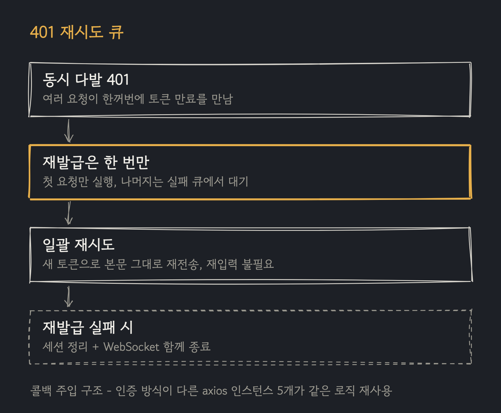
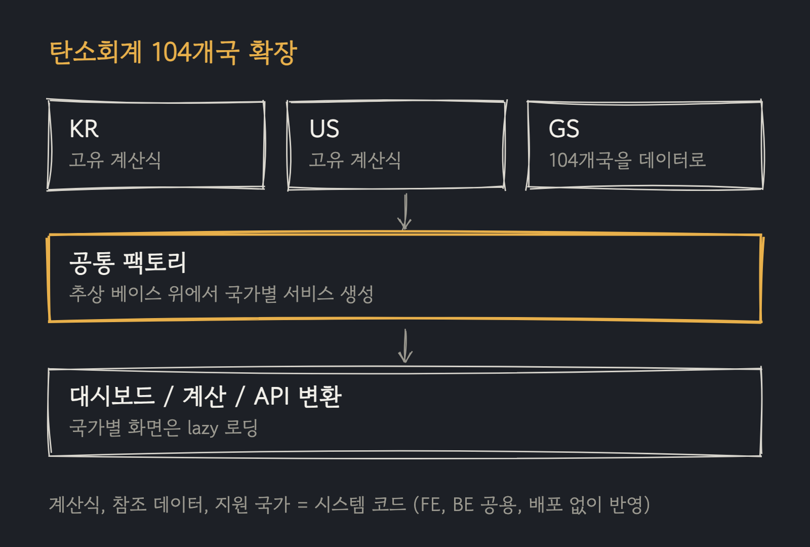

5년차 프론트엔드 엔지니어로, 신재생에너지 거래 플랫폼에서 일하고 있습니다. 고객용 플랫폼과 백오피스, 공통 프론트엔드 라이브러리, OpenAPI 기반 API SDK 생성 저장소까지 같이 관리합니다. React와 TypeScript가 주력이고, 화면 구현에 그치지 않고 인증, 권한, 실시간 메시징, 번들링, 배포처럼 서비스 운영에 필요한 기반을 함께 설계해왔습니다.
버그가 화면 문제인지 데이터 문제인지 애매할 때는 DB에 직접 쿼리를 쳐서 확인합니다. 원인이 어느 쪽인지 빨리 좁히는 걸 잘합니다.
최근에는 사내 문서를 Slack과 개발 도구에서 검색하는 RAG 위키봇을 구축/운영하며, AI 도구를 실제 업무 흐름에 연결하는 영역으로 확장하고 있습니다.
WORK
씨너지
401 재시도 큐와 토큰 재발급 처리
계약 작성 중 토큰이 만료되면 입력 내용이 사라지는 문제를 해결하기 위해 구현했습니다. 401을 가로채 토큰을 재발급하고, 실패한 요청을 본문 그대로 재전송합니다. 동시에 여러 요청이 401을 받아도 첫 요청만 재발급을 실행하고 나머지는 실패 큐에서 대기 후 일괄 재시도하며, 재시도 플래그로 무한 루프를, 제외 목록으로 비밀번호 오입력 같은 401의 오동작을 방지했습니다.
토큰 조회/재발급/세션 정리를 콜백으로 주입받는 구조로 설계해, 인증 방식(Bearer/Basic)이 다른 axios 인스턴스 5개가 같은 로직을 재사용합니다. 세션 정리 시 WebSocket 연결도 함께 종료합니다. 끊지 않으면 만료된 토큰으로 10초 간격 재연결이 반복되기 때문입니다.

Axios interceptor, Promise queue, STOMP/SockJS
씨너지
사내 위키봇 — Notion 문서를 Slack에서 검색
사내 지식이 Notion에 흩어져 찾기 어려운 문제를 해소하고자 직접 기획/개발한 사내 도구입니다. Notion 문서와 GitHub 개발 문서를 색인하고, Slack에서 질문하면 Claude가 문서를 근거로 답변합니다. 검색은 벡터 검색과 BM25를 RRF로 병합한 하이브리드 구조에 최신성 재랭킹(반감기 180일)을 적용했고, Notion은 수정 시각/GitHub 문서는 본문 해시를 비교해 변경분만 재색인하도록 일일 CronJob으로 자동화했습니다.
Jira 스프린트 코멘트를 매주 요약해 Notion DB에 적재 후 재색인합니다(ADF 파서 직접 구현). Slack 스레드 후속 질문, 답변 placeholder, 표 fallback을 처리하고, MCP 엔드포인트를 제공해 로컬 개발 도구에서도 검색할 수 있습니다. Docker 이미지를 ECR에 올려 ArgoCD로 배포하며, 개발팀 외 디자인/기획팀도 사용 중입니다.
AI 코딩 도구가 사내 공통 라이브러리의 사용법을 몰라 잘못된 import나 중복 구현을 만드는 문제를 줄이고자, 라이브러리 패키지 안에 MCP 서버를 내장했습니다. 컴포넌트 목록과 API 조회, 사용처 검색, import 경로 추천 등 13개 도구를 제공해 에이전트가 패키지 표면을 직접 탐색하며 개발할 수 있습니다.
위키봇이 문서 지식을 검색한다면 이쪽은 코드 지식을 검색합니다. npm 패키지의 bin으로 포함해, 라이브러리를 쓰는 저장소 어디서든 설정 한 줄로 연결됩니다.
MCP, Node.js, npm bin
씨너지
공유 AI 챗봇 위젯
사내 AI 챗봇을 여러 앱에 붙일 수 있도록 독립 위젯 패키지로 개발했습니다. SSE 스트리밍 파서를 직접 구현해 응답을 조각 단위로 렌더링하고, AbortController로 답변 중단과 오래된 응답 무시를 처리하며, 실패한 질문은 버튼 한 번으로 재시도합니다. 답변에는 긍정/부정 피드백과 코멘트를 남길 수 있고, 같은 턴에 다시 보내면 덮어씁니다.
위젯은 Shadow DOM 안에서 렌더링되고 Emotion 캐시를 분리해 호스트 앱과 스타일이 서로 오염되지 않습니다. 전용 axios 인스턴스를 사용해 호스트 앱의 API 클라이언트 주입과도 충돌하지 않습니다. SSR과 스타일 격리까지 vitest 테스트로 검증하고, Storybook 스토리도 함께 작성했습니다.
KR/US로 시작한 탄소회계 기능을 104개국으로 확장했습니다. 계산식이 다른 KR/US는 체계를 분리하고, 나머지는 GS(글로벌 표준) 단일 체계에서 국가별 데이터로 관리합니다. 추상 베이스 클래스 위에 국가별 계산/참조 데이터/API 변환 서비스를 구성하고, 팩토리가 리포트 타입에 맞는 구현을 반환하며, 화면은 국가×서브페이지 매핑 기반으로 lazy 로딩됩니다.
계산식/참조 데이터/지원 국가 목록을 시스템 코드로 관리해 프론트엔드와 백엔드가 같은 데이터를 읽습니다. 배포 없이 실시간 반영되며, 신규 국가는 서버 데이터 추가만으로 지원됩니다. 리포트의 PDF 내보내기와 KR/US 다국어(i18next)도 함께 구현했습니다.

추상 클래스 + Factory, 시스템 코드 기반 규칙 관리, React.lazy 코드 스플리팅
씨너지
OpenAPI 기반 API SDK 자동 생성
JS에서 TS로 마이그레이션하면서 수작업 API 호출 코드를 일일이 옮기는 대신, 백엔드의 Swagger 스펙으로 호출 코드와 타입을 자동 생성하는 방식을 도입했습니다. 현재는 도메인별 npm 패키지로 배포하며, 스펙이 바뀌면 스크립트 한 번으로 전체가 재생성됩니다.
커스텀 mustache 템플릿으로 앱별 axios 인스턴스 주입점과 전역 로딩 제어 플래그를 추가했고, 스펙의 operationId 충돌은 생성 전 자동으로 해소합니다. 시스템 코드도 서버에서 받아 상수+타입 쌍으로 생성해 백엔드 코드 값이 프론트엔드 타입으로 검증됩니다.
OpenAPI Generator, 커스텀 mustache 템플릿, 시스템 코드 타입 생성
씨너지
실시간 메신저와 알림
STOMP/SockJS 기반 실시간 메신저를 구현했습니다. 1:1과 그룹 채팅(초대, 이름 변경), 대화 요청, 헬프데스크 연결까지 하나의 메신저 흐름 안에서 처리합니다. 서버 이벤트는 단일 구독으로 수신해 타입별로 Redux에 분배하고, 알림뿐 아니라 입찰과 계약 같은 거래 화면들이 이를 실시간 목록 갱신 트리거로 사용합니다.
STOMP/SockJS, Redux Toolkit
씨너지
폼 입력 리렌더 최적화
상품 등록 폼의 입력 지연을 React DevTools Profiler로 추적해, 부모 컴포넌트의 watch가 입력마다 필드 전체를 리렌더시키는 원인을 확인했습니다. 각 행이 자기 필드만 useWatch로 구독하도록 구조를 변경해 리렌더 범위를 해당 행으로 축소했습니다.
동일한 실수가 반복되지 않도록 원인과 해결 과정을 트러블슈팅 문서로 정리해 팀에 공유했습니다.
React Hook Form, React DevTools Profiler
씨너지
공통 라이브러리와 배포 기반
화면마다 반복되는 요구사항을 공통 테이블 컴포넌트로 표준화했습니다. 컬럼 표시/순서/핀 설정의 localStorage 영속화, 드래그 행/컬럼 재정렬, 확장 행(detail), 컬럼 리사이즈를 지원하며, 폼은 react-hook-form Controlled 래퍼로 통일했습니다. 앱 단에서도 입찰, 매수요청, 상환 폼을 각각 단일 컴포넌트로 만들고 mode(생성/수정/재활성) 분기로 재사용해 중복 구현을 줄였습니다.
revfactory/harness의 아이디어를 Codex 네이티브 구조(AGENTS.md, repo-local skills, custom agent roles)로 재구성한 프로젝트입니다. 요청 한 번으로 프로젝트 도메인을 분석해 에이전트 역할과 검증 게이트를 스캐폴딩합니다.
Codex, Python, 에이전트 워크플로
EXPERIENCE
2023.07 — 현재
(주)씨너지 — 프론트엔드 엔지니어
신재생에너지(REC/탄소) 거래 플랫폼. 고객용 플랫폼과 백오피스 두 SPA에서 거래 상품, 계약, 입찰, 상환, 탄소회계, 메신저, 알림 등 도메인 화면을 개발했습니다. 실시간은 STOMP 단일 구독으로 받아 이벤트 타입별로 Redux에 분배하고, 거래 화면들이 이를 목록 갱신 트리거로 사용하도록 구성했습니다.
2022.03 — 2023.02
(주)피트 — 프론트엔드/하이브리드 앱 개발자
운동검사/러너 서비스를 개발했습니다. 다국어 지원과 단위 변환 시스템을 구축하고, JSON 키 비교 스크립트와 미번역 탐지 모듈을 만들었으며, Multi Repo 환경을 Nx 기반 모노레포로 전환했습니다. CJ웰케어 이벤트 페이지로 신규 가입자 900명 유입에 기여했습니다.